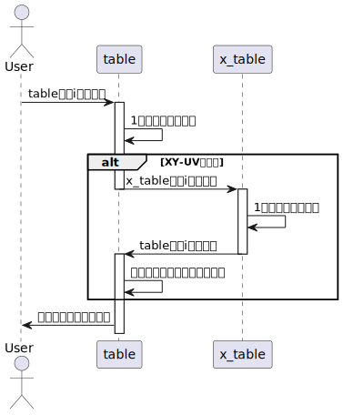

dxf_file module
CAD図面(dxfファイル)に紐づくデータをまとめたライブラリ
- class dxf_file.DxfFile(ax, canvas, table, x_table, name)
ベースクラス:
objectdxfファイルに関連する情報として、LineObjectやSuperTableなどを格納する。
注釈
ox, oy, rx, ry, sitaの値は、元のdxfファイルに対しての値である。
注釈
line_listのインデックスと、tableのインデックスは同期させるように処理する。例えば、tableで線番号が[2,1,3]と線が並ぶとき、line_listの線も[2,1,3]と並べる。
- ax
線をプロットするAxesオブジェクト
- Type:
matplotlib.axes
- canvas
グラフをtkinterに表示するためのオブジェクト(描画時に必要)
- Type:
matplotlib.backends.backend_tkagg.FigureCanvasTkAgg
- table
dxfファイル内の線を管理するテーブル
- Type:
- x_table
もう1つの断面のdxfファイル内の線を管理するテーブル（X-YであればU-V, U-VであればX-Y）
- Type:
- name
断面の名称(X-Y or U-V)
- Type:
str
- line_list
dxfファイル内の線をLineObjectに変換したオブジェクトを格納するリスト
- Type:
list
- selected_point
グラフ内で選択された点を管理するSelectedPointオブジェクト
- Type:
- line_num_max
線番号の最大値
- Type:
int
- ox
グラフの原点のx座標
- Type:
float
- oy
グラフの原点のy座標
- Type:
float
- rx
グラフの回転中心のx座標
- Type:
float
- ry
グラフの回転中心のy座標
- Type:
float
- sita
グラフの回転角度[rad]
- Type:
float
- add_line(item, line)
線をアイテムIDの次の位置に追加する。
- パラメータ:
item(str)--tableの行のアイテムID
line(LineObject)--追加する線
- change_cut_dir()
tableで選択された線の方向を入れ替える
- delete_line(item)
アイテムIDで指定された線をtableおよびline_listから削除する。
- パラメータ:
item(str)--tableの行のアイテムID
注釈
同様の処理がdelete_selected_lineとmerge_lineで必要なので、別のメソッドとして実装。
- delete_selected_line()
選択した線をtableおよびline_listから削除する。
- get_cg()
すべての線の重心の座標を計算する
重心は、すべての点の座標の平均値で計算する。
- Returns:
float-- 重心のx座標
float-- 重心のy座標
- get_index(all=False)
table内のインデックスの番号を取得する
- パラメータ:
all(bool, optional)--True: すべての行のインデックスを取得, False: 選択されている行のインデックスを取得. Defaults to False.
- Returns:
list-- 行のインデックスのリスト
注釈
all=Trueの場合、行の数をNとすると、[0,1,2, ... N]が返される。
サンプル
tableが5行である場合に、tableの2,4行目(インデックス1, 3)が選択されている時
>>> self.get_index() [1,3]
>>> self.get_index(all=True) [0,1,2,3,4]
- get_index_from_item(items)
itemsで指定したアイテムIDを有する行のインデックスを取得する
- パラメータ:
items(list, str)--アイテムIDのリスト または アイテムIDの文字列
- Returns:
list, int-- itemsがリストの場合:インデックスのリスト, strの場合: インデックスの番号
サンプル
tableのアイテムIDが["I001", "I002", "I003", "I004"]の場合
>>> self.get_index_from_item(["I001", "I004"]) [0, 3]
>>> self.get_item_from_index("I003") 2
- get_item(all=False)
table内のアイテムのIDを取得する
注釈
アイテムのIDは、"I001"のような形式で、行追加時に自動的に割り当てられる。行固有の値。
- パラメータ:
all(bool, optional)--True: すべてのアイテムのIDを取得, False: 選択されている行のアイテムのIDを取得。 Defaults to False.
- Returns:
list-- アイテムIDのリスト
サンプル
tableのアイテムIDが["I001", "I002", "I003"]の場合に、2行目と3行目が選択されている時
>>> self.get_item() ["I002", "I003"]
>>> self.get_item(all=True) ["I001", "I002", "I003"]
- get_item_from_index(indexs)
indexsで指定したインデックスのアイテムIDを出力する
- パラメータ:
indexs(list, int)--行のインデックスのリスト または 行番号
- Returns:
list, str-- indexsがリストの場合:アイテムIDのリスト, intの場合: アイテムIDの文字列
サンプル
tableのアイテムIDが["I001", "I002", "I003", "I004"]の場合
>>> self.get_item_from_index([0,3]) ["I001", "I004"]
>>> self.get_item_from_index(2) "I002"
- get_selected_point(event)
matplotlibのpick_eventにバインドされるメソッド
選択点の座標をeventから取得し、インデックス、座標を更新する。
- パラメータ:
event(matplotlib.backend_bases.PickEvent)--matplotlibのpick_event
- load_file(filename, is_refine)
filenameで指定されたdxfファイルを読み込む
AUTOSORT_WHEN_LOADFILE = Trueの場合、ロード時に自動で線を整列する
- パラメータ:
filename(str)--読み込むdxfファイルのパス
is_refine(bool)--True: スプライン点列をリファインして読み込む, False:リファインしない
- merge_selected_line()
選択された線を結合する
結合は、選択された線の端点の距離がLINE_MARGE_NORM_MN未満の場合に実施する。
端点が始点か終点かを判定し、始点→終点 の順になるように、必要に応じて線の向きを入れ替えて結合する。
結合された方のLineObjectは削除されるので、どの線番号が結合されたかの情報が失われる。
よって、結合する前に、どの線番号が選択されていたかを配列にて出力する。
また、結合結果を配列にて出力する。
注釈
選択された線が複数の場合、tableにおけるインデックスの小さい順（上から下）に結合する。
- Returns:
list-- 結合前に選択されていた線番号のリスト
list-- 結合結果のリスト(True: 結合成功. False:失敗)
- offset_origin(offset_ox, offset_oy)
指定の座標に原点をオフセットする。
- パラメータ:
offset_ox(float)--原点のx座標
offset_oy(float)--原点のy座標
- plot(keep_view=True)
グラフ上にline_list内の線をプロットする
以下をプロットする。
プロット対象
選択状態
データソース
プロットデータ
線種
色
透明度
線
選択中
line_list
x,y
実線
青
1
非選択
line_list
x,y
実線
青
0.1
線の向き
選択中
line_list
x,y
ベクトル
青
1
非選択
line_list
x,y
ベクトル
青
0.1
オフセット方向
選択中
line_list
x,y,x_raw,y_raw
ベクトル
黃
1
非選択
line_list
x,y,x_raw,y_raw
ベクトル
黃
0.1
選択点
ー
selected_point
x,y
点
赤
1
線の向きは、x,yの0番目→1番目の座標へのベクトルをプロットする。スプラインは、N-1番目→N番目のベクトルも併せてプロットする。
オフセット方向は、x_raw, y_rawの0番目から、x,yの0番目へのベクトルをプロットする。
プロット前にグラフの描画範囲をxlim,ylimに格納しておく。keep_view=Trueの場合は、プロット後に描画範囲をxlim,ylimに再適用することで、グラフの描画範囲を維持する。
選択中の線はマーカーサイズを5、非選択の線はマーカーサイズを0とすることで、選択中の線のみ、分割点を設定できるようにする。
- パラメータ:
keep_view(bool, optional)--True: グラフの描画範囲を変更しない, False:リセットする. Defaults to True.
- plot_vector(x0, y0, x1, y1, k, col, alpha)
グラフ上にベクトルを表示する
ベクトルの長さは、1に正規化した上で、kをかけることで長さをkとする。
ただし、matplotlib側でベクトル長を自動設定としているので、効果なし。
- パラメータ:
x0(float)--始点のx座標
y0(float)--始点のy座標
x1(float)--終点のx座標
y1(float)--終点のy座標
k(float)--プロットするベクトルの長さ
col(str)--ベクトルの色
alpha(float)--ベクトルの透明度
- reload(is_refine)
filenameで指定されたdxfファイル上の線を読み込み、LineObjectに変換した上で、line_listへ格納する
dxfファイルのうち、LINE, SPLINE, ARC, LWPOLYLINE のオブジェクトを抽出し、以下のLineObjectに変換する。
読み込み順
dxf object
LineObject
line_type
interp_mode
1
SPLINE
spline
cubic
2
ARC
spline
cubic
3
LWPOLYLINE
spline
linear
4
LINE
line
None
LineObjectの線番号(num)は、読み込んだ順に付与する。同種のdxfオブジェクトでは線番号の付与順は任意である。(dxf objectのクエリで早く検索された順)
線番号の最大値(=読み込んだ線の本数)は、line_num_maxに格納する。
- パラメータ:
is_refine(bool)--True: スプライン点列をリファインして読み込む, False:リファインしない
注釈
ARCは、arc_to_splineにより円弧上の座標点列を計算し、splineに変換する。
- remove_line_collision()
オフセットにより生じた線同時の端点の交差を修正する
line_list内のi番目とi+1番目(i=0...N-1)に対し、remove_collisionにより交差を判定する。
交差している場合、i番目とi+1番目の線の座標点列を、交差を修正した座標点列に置き換える。
更に、交差が検出された線のペアをリストに格納し、出力する。
- Returns:
list-- 交差が検出された線同士の線番号（ペア）のリスト
注釈
オフセットが0の状態で、i番目の線の終点と、i+1番目の線の始点が一致している必要がある。
自動整列後に実行すること。
- remove_self_collision()
オフセットにより生じた自己交差を修正する
table内のすべての線の自己交差を判定し、自己交差していれば修正する。
自己交差が検出された線番号をリストとして出力する。
- Returns:
list-- 自己交差が検出された線番号のリスト
- reset_line_num()
線の番号を、line_listのインデックス順に再設定する
注釈
line_listのインデックスとtableのインデックスは同期しているので、tableの並び順（昇順）に線の番号が振り直される。
- reverse_all()
line_list内のLineObjectの座標点列と、line_listを反転する
- rotate(sita, rx, ry)
指定の座標を中心に、指定の角度だけ線を回転する
- パラメータ:
sita(float)--回転角度[rad]
rx(float)--回転中心x座標
ry(float)--回転中心y座標
- select_index(index)
インデックスで指定されたtableの行を選択する
- パラメータ:
index(int)--tableの行のインデックス
- selected(event)
tkinterのtableの<<TreeviewSelect>>イベントにバインドされるメソッド
tableのデータを選択した際に、グラフの再描画を行う。
XY-UV同期中の場合は、相手のテーブル(x_table)に選択イベントを発生させる。この処理フローは下図による。

- パラメータ:
event(Event)--Python標準のイベントクラス。本メソッドでは使用しない
- separate_line()
線を選択点で分割する
以下の条件がすべて成立した場合、線を分割する。
tableにて線が1本だけ選択されている。
選択点が選択されている。
選択点が端点でない。(分割後の座標点列長の長さが2以上となる)
分割結果を判定するための情報として、成否に加えて線番号のリストと分割点のインデックスも出力する。
- Returns:
bool-- True:分割成功, False:失敗
list-- 選択されている線番号のリスト
int-- 分割点のインデックス
注釈
選択されている線番号のリストには、分割が成功した場合、新しく生成されたLineObjectの線番号も格納する。
- set_offset_dist(offset_dist)
line_list内のLineObjectにオフセット距離を設定する
- パラメータ:
offset_dist(float)--オフセット距離
- sort_line()
選択されている線を起点に、残りの線を並び替える。並び替え後、座標点列の向きを判定し、線に設定する。
線の並び替えは、以下の手順で実施する。
選択されている線の終点から最も近い位置にあるライン端を検索する。
1.のライン端を有するラインを、2番目に配置する。1.のライン端がラインの終端である場合，向きを入れ替える。
1.のライン端の逆端から最も近い位置にあるライン端を検索する。
3.のライン端を有するラインを、3番目に配置する。3.のライン端がラインの終端である場合，向きを入れ替える。
3.のライン端から最も近い位置にあるライン端を検索する。
3～5を、テーブルに表示されている全てのラインに対して実施する。
注釈
CAD図面に複数の閉曲線が含まれる場合、選択した線の向きと同じ向きにすべての閉曲線を並び替える。
注釈
閉曲線かどうかの判定は、端点間の距離がDIST_NEAR以下かで判定する。
- Returns:
int-- 選択されている線の数
- table_reload()
tableの情報を最新に更新する。
テーブルのすべてのアイテムIDを取得する
アイテムIDに対応する行のテーブルでのインデックスを取得する
インデックスに対応するline_list内のLineObjectを取得する
LineObjectの線番号、オフセット距離、線種、カット速度をテーブルに設定する
- update(keep_view=True)
グラフとtableの両方を更新する
table_reloadとplotをまとめて実行するだけ。
- パラメータ:
keep_view(bool, optional)--True: グラフの描画範囲を変更しない, False:リセットする. Defaults to True.
- class dxf_file.SelectedPoint(x, y, index)
ベースクラス:
object図面上で選択された点の情報を格納する
- x
選択点のx座標
- Type:
float
- y
選択点のy座標
- Type:
float
- index
選択点の線上でのインデックス
- Type:
int
- reset()
選択点を無効化する
グラフで表示されないように、以下のように設定する。
x,y座標 -> numpy.nan
index -> None
- class dxf_file.SuperTable(root, y_height, x, y)
ベースクラス:
objectdxfファイル内の線を管理するテーブルについてのクラスである
tkinter.treeのインスタンスを格納する。
tkinter.treeを初期化する方法がtreeの再生成しかないため、生成に必要な情報をメンバ変数として保存し、reset()関数がコールされた際にtableを削除、再生成する。
- x_pos
テーブルの画面での配置位置 X座標
- Type:
int
- y_pos
テーブルの画面での配置位置 Y座標
- Type:
int
- root
テーブル先のフレーム
- Type:
tkinter.Frame
- y_height
テーブル先の高さ（行）
- Type:
int
- sync
True:テーブルを他のテーブルと同期する, False:しない
- Type:
bool
- sync_update
True:同期時に更新が必要, False:不要
- Type:
bool
- table
テーブルのインスタンス
- Type:
tkinter.tree
- scrollbar
スクロールバーのインスタンス
- Type:
tkinter.Scrollbar
- reset()
テーブルおよびスクロールバーを初期化する
テーブルには、LineObjectの情報のうち、以下を表示する。
表示項目
データソース
線番号
num
オフセット距離
offset_dist
タイプ
line_type
カット速度
cutspeed_work
- set_sync(sync)
テーブルの同期／非同期を設定する
- パラメータ:
sync(bool)--True:テーブルを他のテーブルと同期する, False:しない